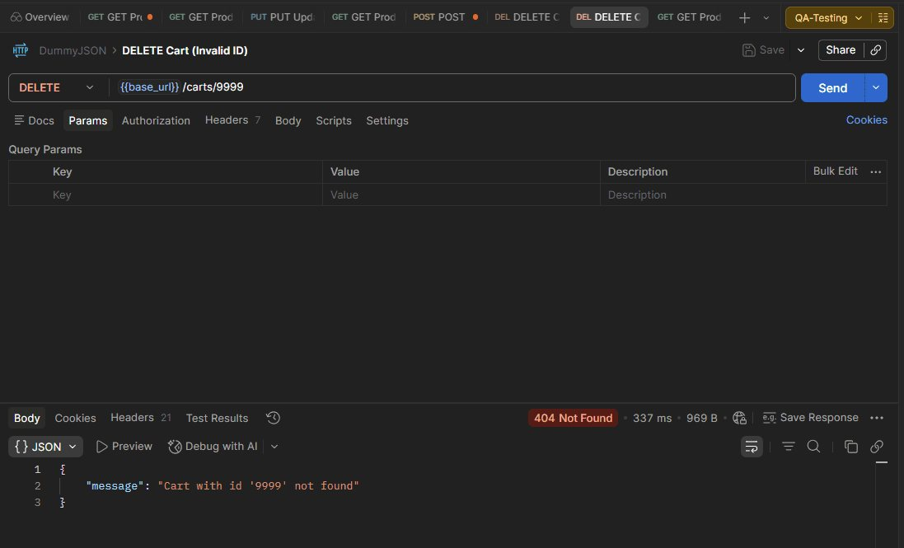
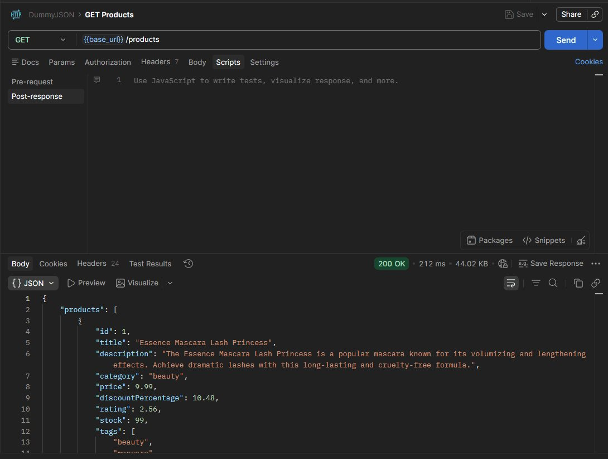
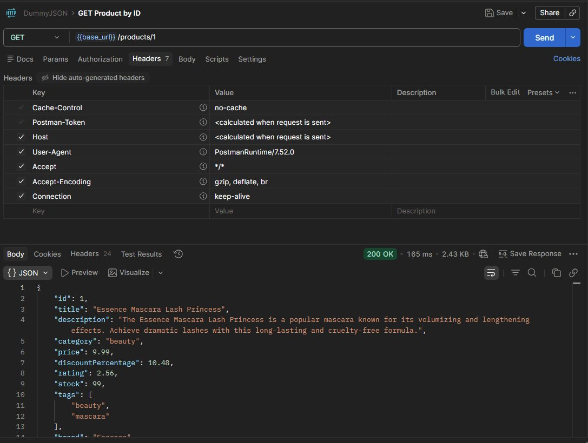
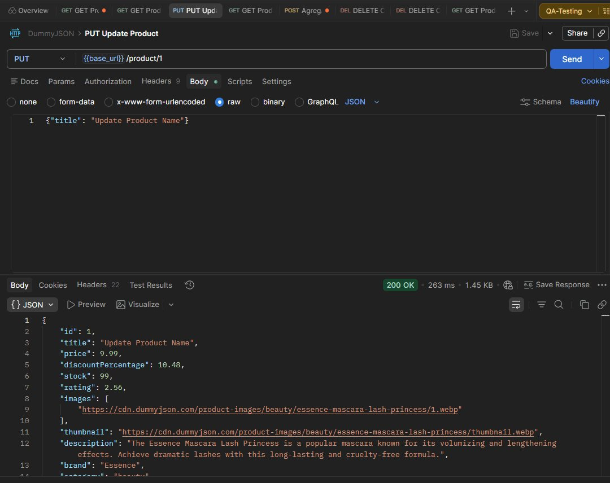
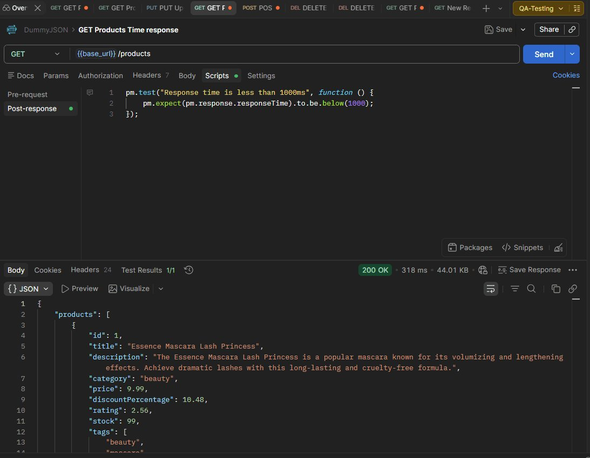
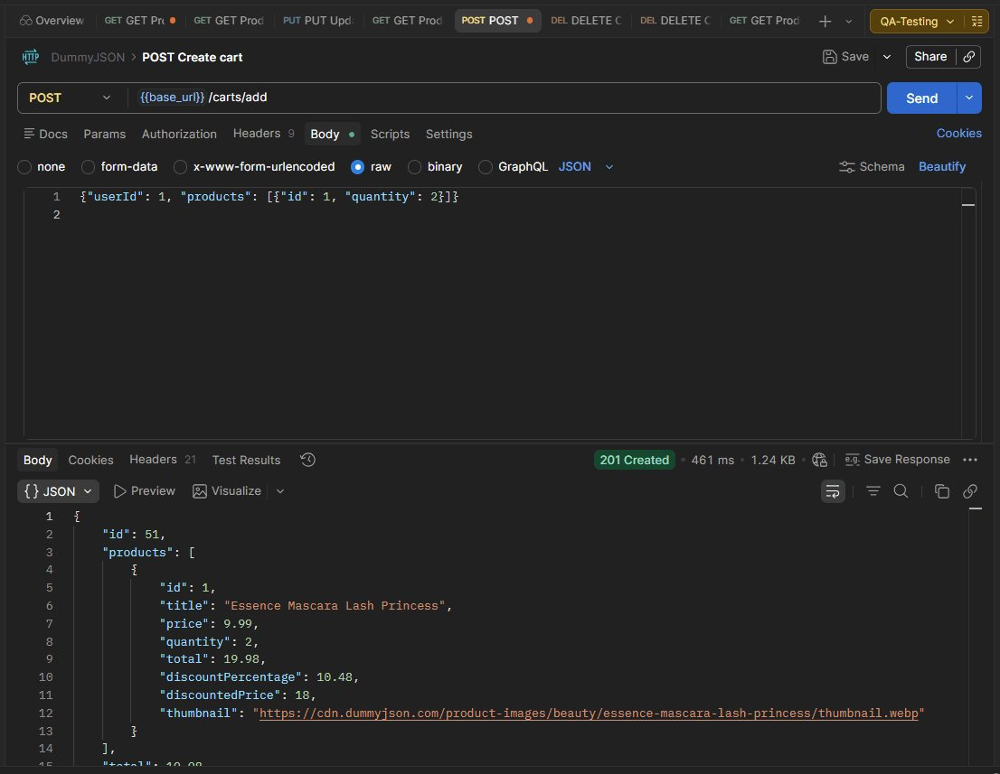
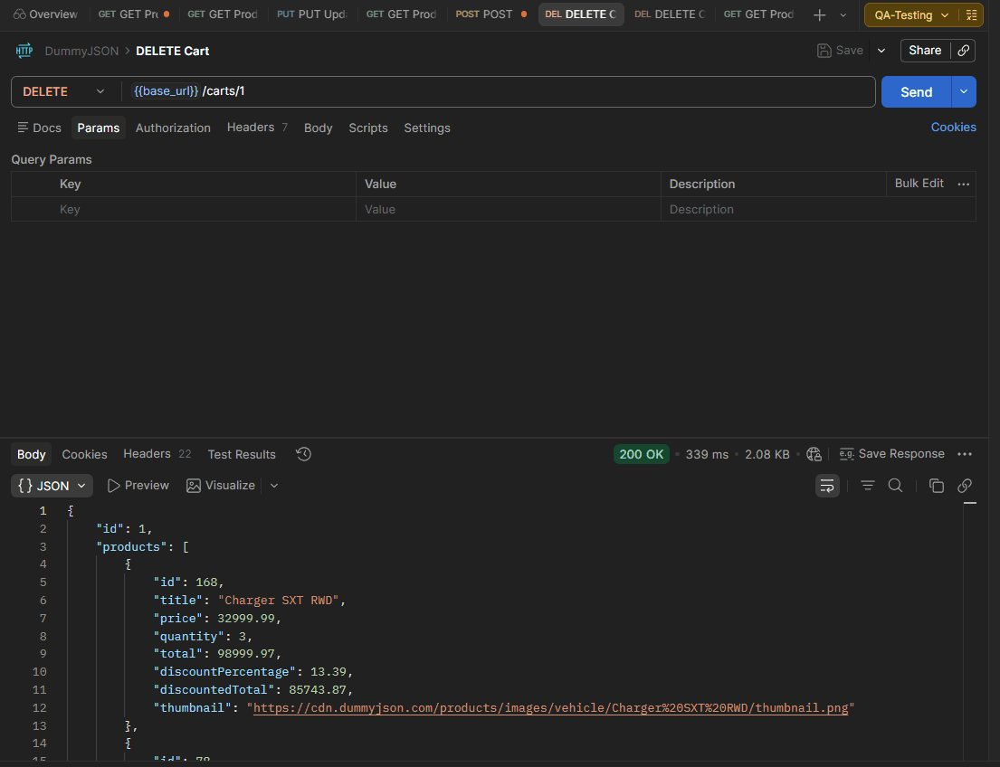
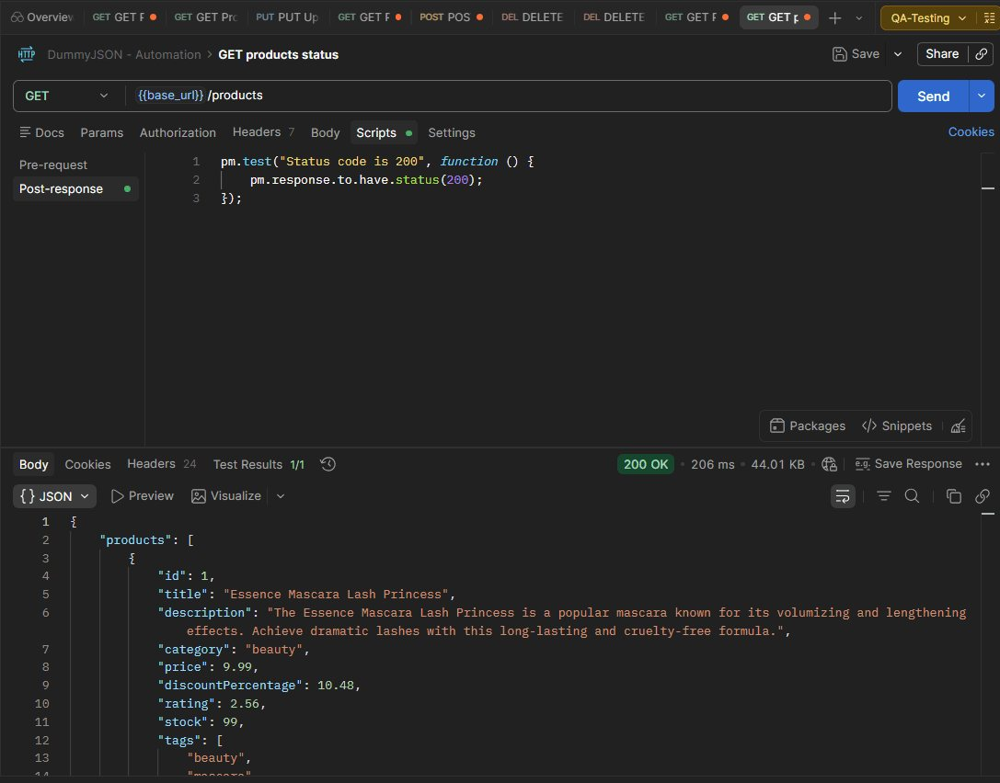
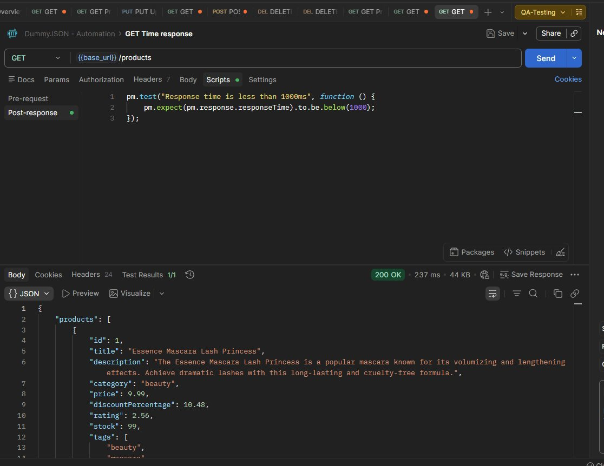

Proyecto QA · Entorno de práctica
API Testing con Postman
Pruebas de una API REST de e-commerce de práctica (DummyJSON): códigos de estado, estructura del JSON, tiempos de respuesta y casos negativos, con aserciones automáticas en Postman.
- Mi rol
- QA, trabajo individual
- API
- DummyJSON, API pública de práctica
- Métodos
- GET, POST, PUT y DELETE
- Herramientas
- Postman: colección, variables de entorno y scripts de test
- Certificación
- Postman API Fundamentals Student Expert, febrero de 2026

Contexto y alcance
Proyecto para practicar pruebas de API antes de aplicarlas a mis apps. DummyJSON simula una tienda online con productos y carritos. Es un entorno de práctica, no un producto real, y así lo presento.
Dentro del alcance
- Productos: listar, obtener por ID y actualizar
- Carritos: crear y eliminar
- Códigos de estado y estructura JSON
- Tiempo de respuesta
- Un caso negativo
Fuera del alcance
- Autenticación con token
- Carga y rendimiento
- Validación formal de esquema (siguiente paso)
Endpoints
| Método | Endpoint | Qué hace |
|---|---|---|
| GET | /products | Lista de productos |
| GET | /products/{id} | Un producto por ID |
| PUT | /products/{id} | Actualizar un producto |
| POST | /carts/add | Crear un carrito con productos |
| DELETE | /carts/{id} | Eliminar un carrito |
Escenarios
| ID | Escenario | Casos |
|---|---|---|
| TS-001 | La API devuelve la lista de productos | TC-001, TC-004 |
| TS-002 | La API devuelve un producto por ID | TC-002 |
| TS-003 | La API permite actualizar un producto | TC-003 |
| TS-004 | Se puede crear un carrito con productos | TC-005 |
| TS-005 | La API devuelve la lista de carritos | No ejecutado |
| TS-006 | Se puede eliminar un carrito existente | TC-006 |
| TS-007 | Eliminar un carrito inexistente devuelve un error controlado | TC-007 |
Casos de prueba
Despliega cada caso para ver la petición, el resultado y la captura de Postman.
TC-001GET /products devuelve la listaPasaGET
- Petición
- GET {{base_url}}/products
- Resultado esperado
- 200 OK y un JSON con el array products.
- Resultado obtenido
- Como se esperaba (ver captura).

TC-002GET /products/1 devuelve ese productoPasaGET
- Petición
- GET {{base_url}}/products/1
- Resultado esperado
- 200 OK y el campo id vale 1.
- Resultado obtenido
- Como se esperaba (ver captura).

TC-003PUT /products/1 actualiza el títuloPasaPUT
- Petición
- PUT {{base_url}}/products/1
- Resultado esperado
- 200 OK y el producto devuelto trae el título nuevo.
- Resultado obtenido
- Como se esperaba (ver captura).

TC-004GET /products responde a tiempoPasaGET
- Petición
- GET {{base_url}}/products
- Resultado esperado
- 200 OK en menos de 1000 ms.
- Resultado obtenido
- Como se esperaba (ver captura).

TC-005POST /carts/add crea un carritoPasaPOST
- Petición
- POST {{base_url}}/carts/add
- Resultado esperado
- 200 OK y un JSON con el id del carrito.
- Resultado obtenido
- Como se esperaba (ver captura).

TC-006DELETE /carts/1 elimina un carritoPasaDELETE
- Petición
- DELETE {{base_url}}/carts/1
- Resultado esperado
- 200 OK y confirmación de borrado en el JSON.
- Resultado obtenido
- Como se esperaba (ver captura).

TC-007DELETE /carts/9999: carrito inexistentePasaDELETE
- Petición
- DELETE {{base_url}}/carts/9999
- Resultado esperado
- 404 Not Found y un mensaje que diga que el carrito no existe.
- Resultado obtenido
- 404 Not Found en 337 ms con {"message": "Cart with id '9999' not found"}.
- Nota
- Caso negativo: pasa porque la API falla como debe. En la versión anterior estaba marcado como fallo por error.
Aserciones automáticas
Cada petición lleva scripts de test en Postman que comprueban el resultado sin mirarlo a mano.
// Código de estado
pm.test("Status code is 200", function () {
pm.response.to.have.status(200);
});
// Estructura: la respuesta trae 5 productos (con ?limit=5)
pm.test("Products length is 5", function () {
const response = pm.response.json();
pm.expect(response.products.length).to.eql(5);
});
// Tiempo de respuesta
pm.test("Response time is less than 1000ms", function () {
pm.expect(pm.response.responseTime).to.be.below(1000);
});

Limitación del entorno
DummyJSON simula las escrituras: según su documentación, PUT, POST y DELETE devuelven la respuesta esperada pero no guardan nada en el servidor. Por eso el 200 de TC-003 confirma que la API acepta la petición, no que el cambio persista.
Siguiente prueba: un GET /products/1 justo después del PUT. Si devuelve el título original, queda demostrado. En una API real, ese GET de verificación es obligatorio.
Siguientes pasos
- Ejecutar TS-005 (listar carritos), que quedó sin caso.
- Añadir aserciones de Content-Type y de esquema JSON.
- Más casos negativos: ID no numérico, cuerpo vacío en POST, método no permitido.
- Aplicar lo mismo a la API de Supabase de mis apps: que una usuaria no pueda leer filas de otra.
Qué aprendí
Un caso negativo pasa cuando el sistema falla como debe. El 404 de TC-007 era el resultado correcto y yo lo había marcado como fallo.
Definir el esperado exacto (código y mensaje) antes de ejecutar. “Devuelve error o un mensaje” no se puede verificar.
Un 200 no basta. En una API que simula escrituras, solo un GET posterior dice si el cambio existe.
Certificación
Postman API Fundamentals Student Expert, obtenida en febrero de 2026: peticiones, variables, colecciones, scripts de test y ejecución de colecciones.